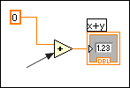

You have not wired a required input on this subVI or function. In the following example, the y input of the Add function is not wired. You must wire both inputs for the Add function.
To correct this error, wire the required input. To view the required inputs, display the Context Help window and move the cursor over the subVI or function. The labels of required terminals appear bold in the Context Help window.